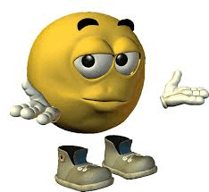

ANNA WASIAK KLASA 1B
CO POTRAFIĘ
- pracować w exelu
- podstawy pythona
- znam skróty na klawiaturze
- szukać informację na dane tematy
- tworzyć strony internetowe
- mówić w trzech językach obcych (hiszpański, francuski, angielski)
- projektować różne rzeczy
- grać dobrze w szachy
- fotografować
- pisać wiersze
- sensownie planować
- gotować\piec
- jeździć na rowerze,rolkach,nartach,łyżwach
- dobrze pływać
- szkicować,szydełkować
CO CHCIAŁABYM POTRAFIĆ
- myśleć szybko i logicznie podczas rozwiązywania zadań matematycznych i nie tylko
- być dobra ze wszystkich przedmiotów ścisłych i rzeczywiście je rozumieć i wykorzystywać
w praktyce
- potrafić dobrze grać na jakimś instrumencie
CO CHCĘ ROBIĆ W PRZYSZŁOŚCI
- chciałabym posiadać zawód związany z naukami ścisłymi
- dużo podróżować
- próbować nowych rzeczy
- zdobywać nowe przydatne umiejętności
- studiować na dobrej uczelnni

strona szkoły